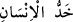
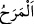
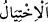
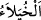
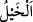
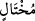
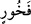
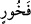
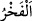
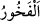

dolayı yüz çevirmektir.” der.
“__WORD__ (insanın yüzü, yanağı),” sağdan ve soldan burnu çevreleyen kısımdır veya
iki gözün kenarlarından çeneye kadar olan kısımdır yahut göz çukurlarından sakala
kadar olan kısımdır. Nitekim el-Kâmûs’ta böyle geçmektedir.
Mânâ şöyledir: Selam verdiğin, konuştuğun veya karşılaştığın zaman alçak gönüllü
olarak yüzünü bütünüyle insanlara çevir. Onlardan yüzünü çevirme ve büyüklük
taslayan kimselerin insanları, özellikle fakirleri, küçümseyerek yaptıkları gibi yüzünün
bir tarafını çevirme. İyi muâmele etme bakımından senin nazarında zengin ile fakir aynı
seviyede olsun.
Âyetin işâreti ise şöyledir: “Allâh’ın sana feth edip verdiği şeyler sebebiyle kendini
beğenip kibirlenerek ve böbürlenerek yanağını çevirme. Yoksa böyle yaparak uzun bir
müddette ıslah ettiğini bir anda ifsâd etmiş olursun.
Hâfız der ki:
Kanadım var diye yoldan çıkma; ok da bir zaman yükselir,
Havada gider ama sonunda toprağa düşer kalır.
“Ve yeryüzünde böbürlenerek yürüme.” “
” elde edilen nîmetten kaynaklanan
şımarıklık ve kibirlilik gibi aşırı sevinç ve hafiflik demektir. Yâni şımarıklık, aşırı
sevinç, hafiflik içinde ve kendini beğenmiş bir halde yürüme. Nitekim insanların
çoğunda bu hal gözükür. Özellikle de dinî ve dünyevî bir maslahat yoksa, böyle bir
yürüyüş asla doğru karşılanmaz. O halde câhiller ve dünyâya tapanlar/dünyâ sevdalıları
gibi salına salına gitme.
“Zira Allah, kendini beğenmiş övünüp duran kimseleri asla sevmez.”
“__WORD__ ve “__WORD__ üstün olduğunu hayal ederek kibirlenmek demektir. “__WORD__ (at)”
kelimesi de buradan gelir. Çünkü ata binen herkes mutlaka içinde bir büyüklenme hissi
duyar.
“__WORD__ büyüklenerek yürüyene, “__WORD__ ise insanları küçümseyerek yanağını çevirene
mukabil kullanılmıştır. “__WORD__un sonra gelmesi ise âyet sonundaki fasılaya uygun olması
içindir. “__WORD__ insanın dışında bulunan mal, şöhret ve rütbe gibi maddi değerlerle
övünmektir. “__WORD__ ise iyi hasletlerini uzun uzadıya sayıp duran ve bu hasletlerden
mahrum olan kimseleri küçük gören kişidir.
Yâni Allah Teâlâ, yürüyüşünde büyüklük taslayan ve böbürlenen, nîmet ve zenginlik
sebebiyle insanlara zulmeden nazlı ve cilveli kimseyi sevmez, bilakis ona gazap eder.
Bir hadîste şöyle buyrulmuştur: “Câhiliye döneminde, üzerinde güzel elbise bulunan
bir adam büyüklenerek yola çıktı. Allah Teâlâ arza emretti de (yarılıp) onu içine aldı.
O kıyâmet gününe kadar yere batmaya devam edecek.”[89]